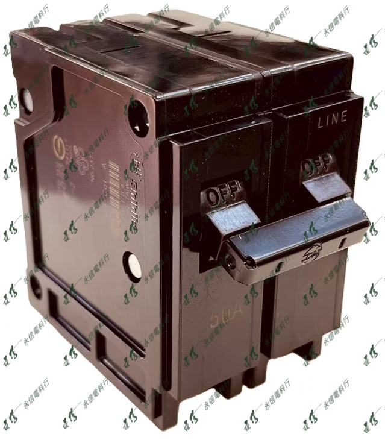

BRAND PRODUCT INDEX
士林電機 SHIHLIN ELECTRIC
目前網站已建立士林電機 S-P 電磁接觸器、MSO-P 電磁開關、BHA 小型斷路器，以及 BH／BLU 無熔絲斷路器商品頁。不同系列分成獨立卡片，後續可繼續擴充。
 58 個商品頁5 個系列分類
58 個商品頁5 個系列分類AVAILABLE PRODUCT SERIES
已建立商品系列
點選系列卡片即可查看該系列目前已建立的全部商品。未來同品牌新增不同產品線時，會以新的系列卡片繼續擴充，不會把所有型號混在同一張卡片裡。

14 個商品頁士林電機 SHIHLIN ELECTRIC
士林電機 SHIHLIN ELECTRICS-P 系列電磁接觸器
依完整型號與線圈電壓整理士林 S-P 系列電磁接觸器。
查看系列與全部型號 →
14 個商品頁士林電機 SHIHLIN ELECTRIC
士林電機 SHIHLIN ELECTRICMSO-P 系列電磁開關
依完整型號、附 OL、容量與電流標示及控制電壓整理商品頁。
查看系列與全部型號 →
14 個商品頁士林電機 SHIHLIN ELECTRIC
士林電機 SHIHLIN ELECTRICBHA 小型斷路器
BHA31、BHA32、BHA33 軌道式小型斷路器，依極數與額定電流分類。
查看系列與全部型號 →
15 個商品頁士林電機 SHIHLIN ELECTRIC
士林電機 SHIHLIN ELECTRICBH 無熔絲斷路器
BH 系列 2P、3P 無熔絲斷路器，依極數與額定電流整理。
查看系列與全部型號 →
1 個商品頁士林電機 SHIHLIN ELECTRIC
士林電機 SHIHLIN ELECTRICBLU 無熔絲斷路器
目前建立 BLU 2P 50A／50AF，依實物銘牌整理遮斷容量與使用條件。
查看系列與全部型號 →品牌與供應說明
本頁僅整理永信電料行網站目前已建立的商品頁，不代表完整原廠全系列、即時庫存或官方代理資格。實際供應、價格與交期請依完整型號另行確認。